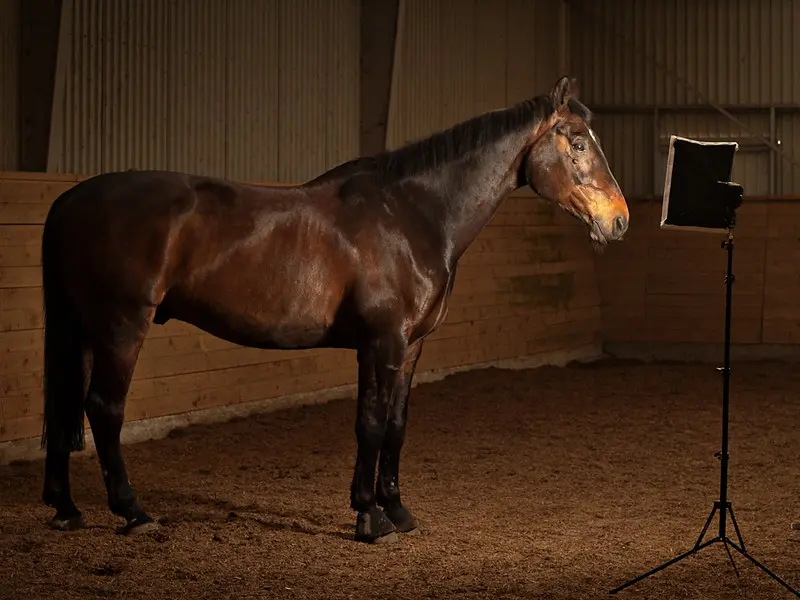

Glem Facebook. Join i stedet LinkedIn og send en invitation til at flette netværk.
Pssst! Jeg gemmer mig også på Mastodon-serveren Helvede, hvor jeg nyder friheden fra Meta og Google, mens jeg socialiserer og lærer en masse spændende ting af de mennesker, der huserer der.
Her er min hest . Han hedder Mascot Bomø og er af ædel arv.
Mvh. Kenny